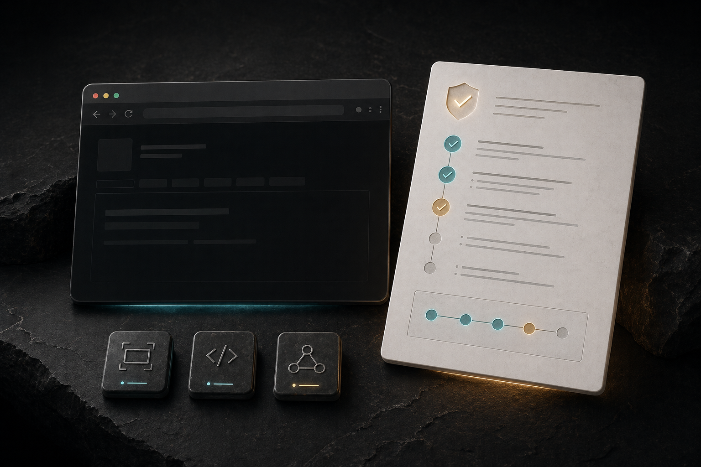
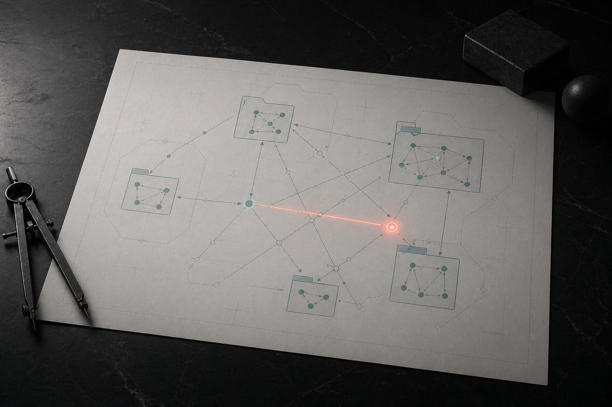
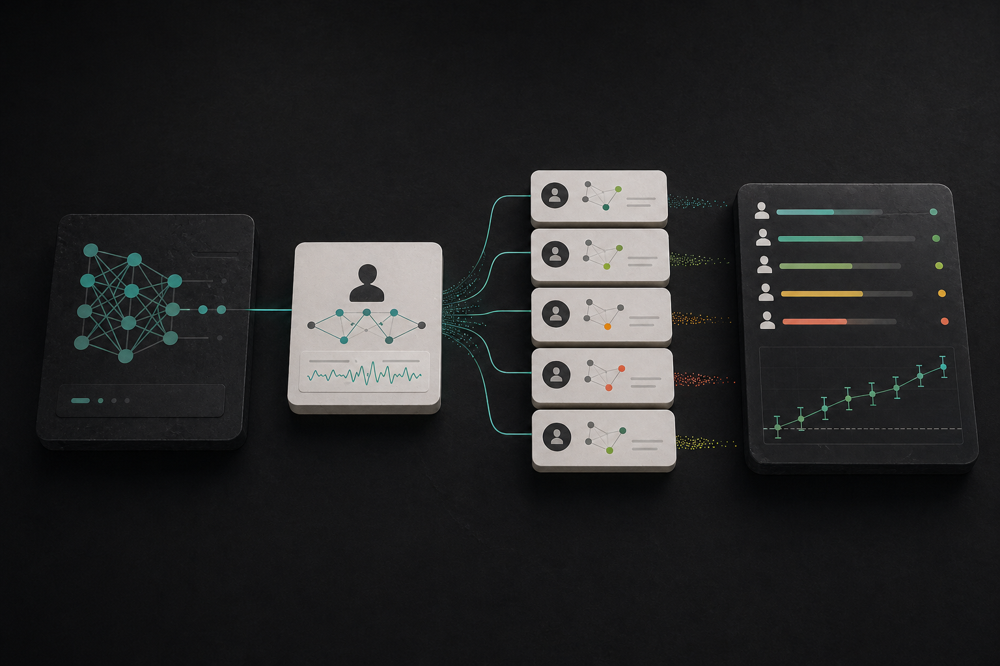

Browser proof
TaskProof
Browser specs into screenshots, DOM captures, console/network evidence, and static reports.
RepoCodex Relay
A Telegram DM becomes a local Codex run on your Mac. The phone is the remote. The Mac keeps the files, tools, sandbox, and account context.
Send a task, screenshot, repo prompt, or command from Telegram.
A local LaunchAgent calls the Codex CLI with your configured context.
The final answer comes back to Telegram when Codex is done.
The One Project To Judge
Codex Relay is the clearest product in the portfolio: a private phone-to-Mac remote for local AI work. It is not a hosted agent platform, not VNC, and not an official OpenAI or Telegram app.
install
git clone https://github.com/dicnunz/codex-relay.git
cd codex-relay
./scripts/install.shProof Behind It

Browser proof
Browser specs into screenshots, DOM captures, console/network evidence, and static reports.
Repo
Architecture
Import graphs, cycles, deep imports, boundary drift, and offline TypeScript/JavaScript reports.
RepoTesting UX
Minimal failing inputs, deterministic seeds, shrink traces, and exact rerun commands.
Repo
Evals
Local benchmark artifacts for mentor-worker LLM collaboration with reproducible scoring.
LiveThe signal is judgment: choosing bounded ideas, validating behavior, and packaging the result.
Repos should be easy to run on a Mac without unnecessary hosted infrastructure or paid services.
Screenshots, demos, tests, reports, and install commands carry more weight than broad claims.